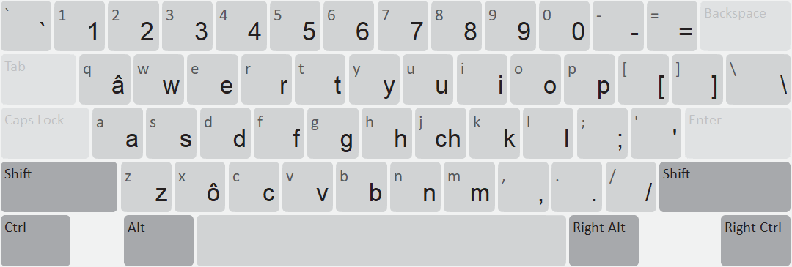
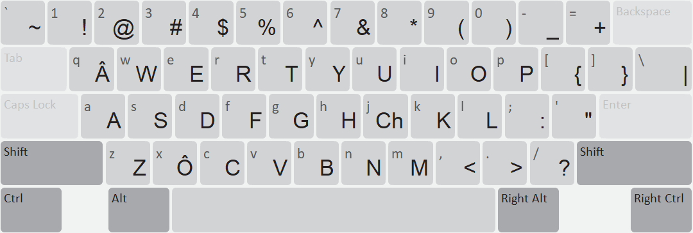
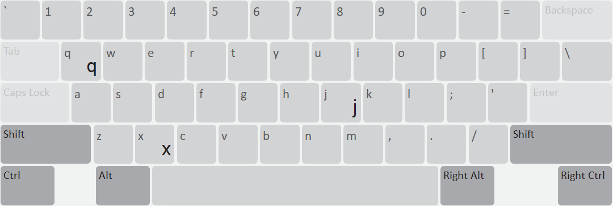
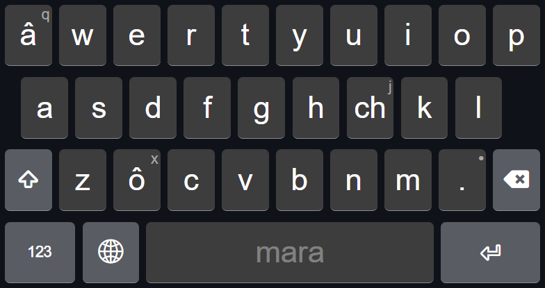
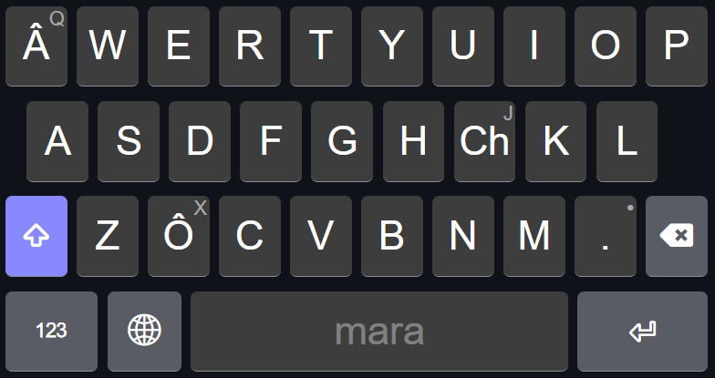
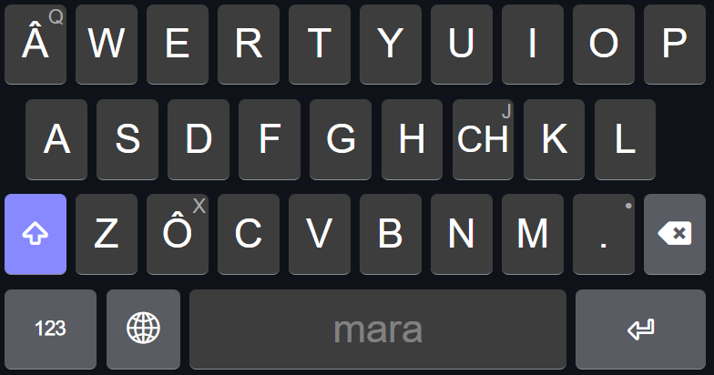

This keyboard is for the Mara language.
The Mara Keyboard is designed for the Mara people to type easily in their language.
The Mara Keyboard is based on the standard English (QWERTY) layout, but includes special characters for the Mara language.
If you need to type the original English q, x, or j, you can use the Right Alt (AltGr) key:
The keyboard features smart, step-wise backspacing for circumflex characters. Pressing Backspace immediately after typing â, Â, ô, or Ô will only delete the circumflex (^) and leave the base letter intact. Pressing it a second time will delete the base letter.
This allows for easy typing of the Mara alphabet while retaining access to standard English letters. The rest of the keys follow the standard QWERTY layout.
The touch layout for phones follows a similar pattern, with the special characters readily available on the main keyboard layer.
Mara Kibaw he Marasawzy ta âmo reih hmâpa ta châ ama chhuh nawpa ta pachhuahpa a châ.
Mara Kibaw he English (QWERTY) layout hmâpa ta taopa châ ta, Mara reihchâ liata hawhrawh eihpazy: â, ô, nata ch he pahlaopa a châ.
Mongyuh Hawhrawhzy: q, x, nata j zy chhuh awpa ta Right Alt (AltGr) key hmâ theipa a châ:
He keyboard liata smart backspace khôpa châ. â, Â, ô, nata Ô na chhuh tawhta Backspace na hmie khiah, a chô liata a luhkhu (^) he a rao tua aw ta, a hawhrawh pizy a y chy aw. Backspace na hmie heih khiahta cha a hawhrawh pizy a rao ha aw.
He he Mara châhnawh chhuhna a pahlâ nawpa châta ta pachhuahpa a châ. Key hropazy cha QWERTY layout a ypa hawhta a y.
Phone châta touch layout chhao he hawhna heta taopa châ ta, Mara reihchâ hnawh eih viapazy chhao main keyboard liana he hmâ thei hawpa a châ.
Default (Unshifted)

Shifted

Right Alt (AltGr)

Shift + Right Alt
Default (Unshifted)

Shifted

Caps Lock

This keyboard was created by Laitei.
See LICENSE.md for copyright information.